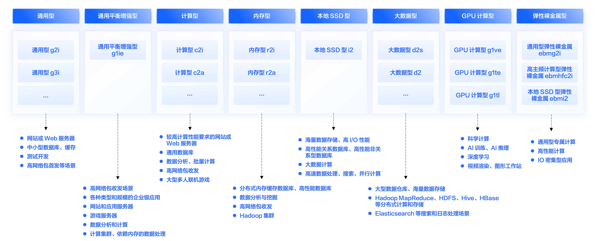
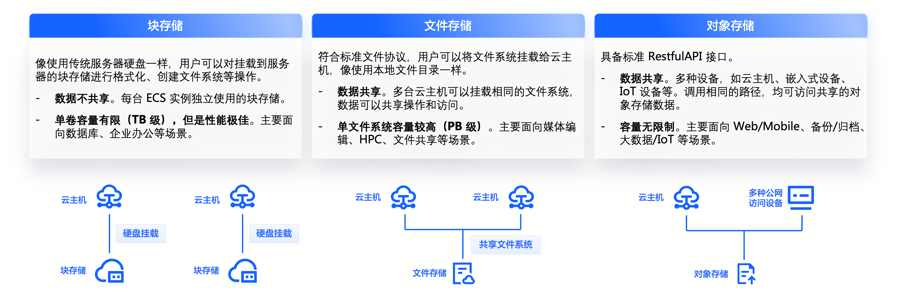

概述
- 本篇以总体视角总结Kubernetes 的最佳实践
一 授权
二 集群
使用 KubeCm 管理多集群 KubeConfig
背景
- 如果您同时管理多个集群，就需要不停的修改
$HOME/.kube/config文件的内容。如果使用手工的方式，将多个集群的 KubeConfig 文件合并，则低效且可能出错。
解决方案
- KubeCm 是一个多集群 KubeConfig 访问凭证管理工具，支持展示、切换、添加、删除 KubeConfig 访问凭证到
$HOME/.kube/config文件中，方便多集群管理场景。
添加访问凭证
执行以下命令，添加访问凭证。
kubecm add -f kube.conf
查看集群列表
kubecm list
切换集群
kubecm switch
三 节点和节点池
建议事项
没有绝对通用的方法来选择合适的节点，因此需要您根据业务特点综合考虑小规格、大规格节点的优劣势来选择接节点类型。
常见的经验如下:
- 确定整个集群的正常状态下的资源需求总核数以及为保证可用性的冗余度。
-
- 例如业务峰值的负荷不超过 144 核，并且需要保留 10% 的冗余度，算得总的核数需求为 144/90%=160 核，那么可以选择 10 台 16 核 ECS。这样如果有一台 ECS 出现故障，剩余 ECS 仍可以支持现有业务正常运行。当然您也可以选择通过弹性伸缩的方式来实现可用性的保障，详情参见 弹性伸缩。
- 依据业务对计算存储网络等的要求及开发语言进行分类：
-
- 节点分为计算型（CPU 内存比 1:2 左右）、内存型（CPU 内存比 1:8）、通用型（CPU 内存比 1:4）等，业务也可以依据对于计算、存储、网络等资源的需要情况区分为计算密集型、IO 密集型等匹配选择合适的节点类型。例如 Java 类应用通常内存占用较高，建议考虑使用 CPU 内存比例为 1:8 的机型。
实例规格应用场景

四 网络
五 数据面最佳实践
六 控制面最佳实践
七 存储

| 对比项 | 块存储 EBS | 文件存储 NAS | 对象存储 TOS |
|---|---|---|---|
| 使用方式 | 像使用传统服务器硬盘一样，用户可以对挂载到 ECS 上的块存储（硬盘）做格式化、创建文件系统等操作。 | 符合标准文件协议，用户可以将文件系统挂载给 ECS，像使用本地文件目录一样。 | 具备标准 Restful API 接口，用户可以通过编程或第三方工具访问对象存储。 |
| 共享方式 | 数据不共享，或特殊的数台服务器共享卷，每台服务器使用独立的块存储（硬盘），多服务器之间数据隔离。 | 数据共享，支持多台服务器共享，多台服务器可挂载相同的文件系统，数据可以共享操作和访问。 | 数据共享，设备无限制，服务器、嵌入式设备、IoT 设备，所有调用相同路径，均可访问共享的对象存储数据。 |
| 场景对比 | 关系数据库、NoSQL 数据库、ELK 分布式日志搜索、企业办公应用、数据仓库、高性能计算等场景。 | 企业办公 OA、AI 训练、门户网站、游戏、DevOps、容器微服务、渲染等场景。 | 互联网应用、OTT 视频、视频监控、备份/归档、大数据/IoT 等场景。 |
八 调度
九 可观测性
十 安全
十一 迁移
十二 镜像加速
十三 解决方案
十四 弹性容器实例
十五 ETCD 优化
包括高可用部署、提高磁盘性能、提高 Etcd 进程的磁盘 IO 优先级、分离 Events 存储等
- 参考Etcd 优化
十六 备份
备份方案制定
物理备份：etcd 备份
保存某一个时刻的快照，快捷方便。
使用命令
ETCDCTL_API=3 /usr/local/bin/etcdctl --endpoints=https://127.0.0.1:2379 \
--cacert="${ETCD_CA_CERT}" --cert="${ETCD_CERT}" --key="${ETCD_KEY}" \
snapshot save "${BACKUP_DIR}/etcd-snapshot-${DT}.db"
逻辑备份：velero 备份 ，
允许用户自己选择备份的内容，比如单个 namespace、指定资源类型等。
- 查看配置的存储位置是否可用
velero backup-location get
- 实际备份, 选择对应的资源进行备份
velero create schedule xxx --schedule="0 1 * * *" --include-namespaces=prod --snapshot-volumes=false --default-volumes-to-restic=false --ttl=168h
优缺点
物理备份的优点是速度快，无论是备份还是回恢复，但缺点是元数据不可读，只能全部恢复。而逻辑备份正好相反，因此两者可以结合使用，既能快，又能有细粒度控制的能力。
十七 Operator
通过自定义资源，我们可以将应用抽象为一个整体，而不用去关心该应用是由哪些 Kubernetes 原生组件构成的，什么 Pods、Deployments、Services 或 ConfigMaps 统统交给 Operator 来管理。创建 Operator 的关键是自定义资源的设计，通过直接调用 Kubernetes API，编写自定义规则自动管理和维护 Kubernetes 集群中的应用，包括自动化安装、配置、更新、故障转移、备份恢复等等。这样的应用也被称为 Kubernetes 原生应用（Kubernetes-native application